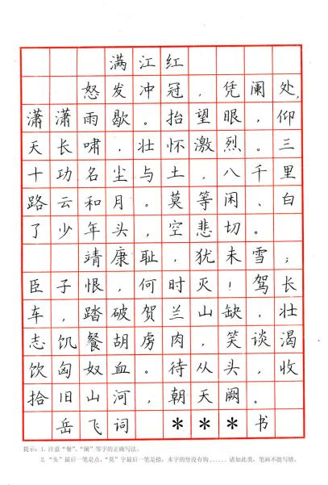
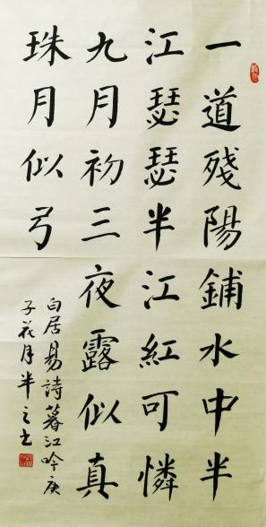

楷书也叫正楷、真书、正书。从程邈创立的隶书逐渐演变而来，更趋简化，横平竖直。《辞海》解释说它“形体方正，笔画平直，可作楷模。”故名楷书。始于汉末，通行至现代，长盛不衰。
楷书的产生，紧扣汉隶的规矩法度，而追求形体美的进一步发展，汉末、三国时期，汉字的书写逐渐变波、磔而为撇、捺、且有了“侧”（点）、“掠”（长撇）、“啄”（短撇）、“提”（直 钩）等笔画，使结构上更趋严整。如《武威医简》、《居延汉简》等。楷书的特点在于规矩整齐，是字体中的楷模，所以称为楷书，一直沿用至现代。
楷书有楷模的意思，张怀瓘《书断》中已先谈到过。六朝人仍习惯地用着它，例如羊欣《采》文，王僧虔《论书·韦诞传》中云：“诞字仲将，京兆人，善楷书。”那是“八分楷法”的简称。到北宋才以之代替了正书之名，其内容显然和古称是不一样的，名异实同和名同实异之例，大概有以上这些。
楷书是我国封建社会南北魏到晋唐最为流行的一种书体。在楷书产生之前，我国的书法已产生了大篆、小篆和隶书三种书体。大篆是相对小篆而言的，一般把小篆以前所有的古文字统称为大篆，包括甲骨文、金文和战国时期除秦国之外的六国文字。小篆是秦统一中国之后通行的文字，它是以秦国的文字为基础，参照其他诸侯国文字，为便于书写而删繁就简、规范统一的，这是中国书法史上最初的规范化书体。
初期“楷书”，仍残留极少的隶笔，结体略宽，横画长而直画短，在传世的魏晋帖中，如钟繇的《宣示表》、《荐季直表》、王羲之的《乐毅论》、《黄庭经》等，可为代表作。观其特点，诚如翁方纲所说：“变隶书之波画，加以点啄挑，仍存古隶之横直”。
东晋以后，南北分裂，书法亦分为南北两派。北派书体，带着汉隶的遗型，笔法古拙劲正，而风格质朴方严，长于榜书，这就是所说的魏碑。南派书法，多疏放妍妙，长于尺牍。南北朝，因为地域差别，个人习性、书风迥然不同。北书刚强，南书蕴藉，各臻其妙，无分上下，而包世臣与康有为，却极力推崇两朝书，尤重北魏碑体。康氏举十美，以强调魏碑的优点。
唐代的楷书，亦如唐代国势的兴盛局面，真所谓空前。书体成熟，书家辈出，在楷书方面，唐初的虞世南、欧阳询、褚遂良、中唐的颜真卿、晚唐的柳公权，其楷书作品均为后世所重，奉为习字的模范。
初唐三大书法家，欧阳询、虞世南、褚遂良的楷书，都最适宜作中楷的临摹范本。兹分别简介如后：
欧阳询的正楷，源出古隶，以二王体为基础，参以六朝北派书风，结体特异，独创一格，其势力深入社会，几为学书的标准本。究其楷书特点，用笔刚劲峻拔，笔画方润整齐，结体开朗爽健。他的楷书碑帖代表作有《九成宫醴泉铭》、《化度寺碑》碑等。
虞世南的楷书，婉雅秀逸，上承智永禅师的遗轨，为王派的嫡系。虽源出魏晋，但其外柔内刚，沉厚安详之韵，却一扫魏晋书风之怯懦。其楷书代表作，当以《孔子庙堂碑》为最。 褚遂良的楷书，以疏瘦劲练见称，虽祖右军，而能得其媚趣。其字体结构看似非常奔放，却能巧妙地调和着静谧的风格，开创了前人所未到的境地，其楷书代表作，当以《雁塔圣教序》为最。
如果说汉魏是楷书的初始阶段，唐是楷书的成熟阶段，那么宋元就是楷书的延伸阶段。唐代楷书法度森严、结构严谨，到了宋元时期书法家们开始追求作品的美感，有的清秀俊朗，有的雍容典雅。
清代的楷书以邵瑛所著的《间架结构摘要九十二法》为代表，它是在唐初四大书家之一欧阳询《结字三十六法》及明代李淳《大字结构八十四法》基础上系统、全面地研究剖析了汉字结构组合规律，归纳总结出九十二种汉字结体书写的方法，并各有典型例字。《间架结构摘要九十二法》是一本较为完整、实用的法帖，更对后世书者影响巨大，不仅适于初学书者临习，也可供书法爱好者参考欣赏。九十二法对初学者了解间架结构有指导意义，是初学者的启蒙导师。《间架结构摘要九十二法》成书100年后，被著名书法家黄自元临摹并推广。在清末及民国初年达到了家喻户晓、人手一册、学书之人案头必备的程度，直至现代仍有广泛的影响力。